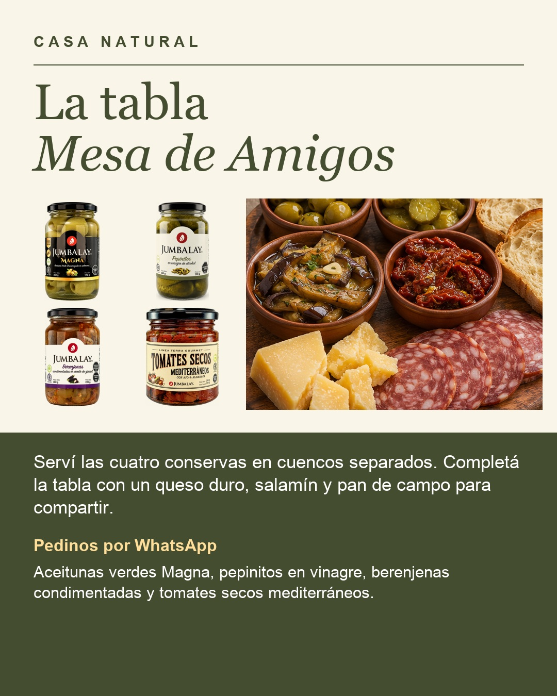

Qué necesitás
- Aceitunas verdes Magna Jumbalay
- Pepinitos en vinagre Jumbalay
- Berenjenas condimentadas Jumbalay
- Tomates secos mediterráneos Jumbalay
- Queso duro a elección
- Salamín
- Pan de campo
Ajustá las cantidades según los comensales y tu gusto.
Cómo prepararlo
- Serví las aceitunas, los pepinitos, las berenjenas y los tomates secos en cuencos separados.
- Cortá el queso, el salamín y el pan de campo.
- Disponé todo en una tabla, con utensilios para servirse, y llevá a la mesa.